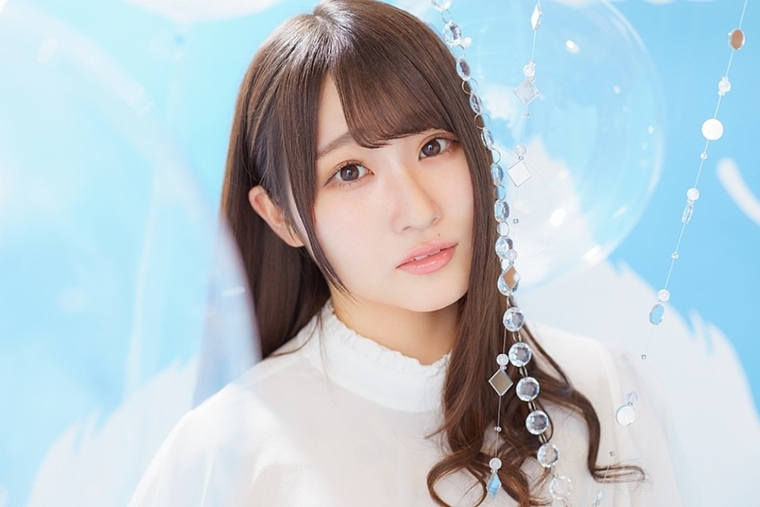

メンバー紹介(50音順)
1期生
潮 紗理菜(うしお さりな)

「なっちょ」というニックネームでよく呼んでいます。
日向坂の聖母という異名を持っており,その名の通りとても性格が温厚で声が癒されます。
また最近はインドネシアで買ったお土産を様々な人にプレゼントして「サリエもん」というあだ名を獲得したらしいです。
日向坂の聖母という異名を持っており,その名の通りとても性格が温厚で声が癒されます。
また最近はインドネシアで買ったお土産を様々な人にプレゼントして「サリエもん」というあだ名を獲得したらしいです。
影山 優佳(かげやま ゆうか)
グループ一の頭脳の持ち主です。
最近まで学業により休止をしていましたが活動を再開しました。
サッカー大好き少女でブログでもサッカーチームの解説をしています。
最近まで学業により休止をしていましたが活動を再開しました。
サッカー大好き少女でブログでもサッカーチームの解説をしています。
加藤 史帆(かとう しほ)
ニックネームは「かとし」。
ヘニョヘニョしている変人。
とりあえずこの人をバラエティに出しておけば撮れ高は見込めると思います。
運動神経がいいです。
ヘニョヘニョしている変人。
とりあえずこの人をバラエティに出しておけば撮れ高は見込めると思います。
運動神経がいいです。
齊藤 京子(さいとう きょうこ)
ニックネームは「キョンこ」。
低音ボイスの変人。
とりあえずこの人をバラエティに出しておけば撮れ高は見込めると思います。
運動神経が悪いです。
料理が絶望的にできません。
歌はめっちゃうまいです。
低音ボイスの変人。
とりあえずこの人をバラエティに出しておけば撮れ高は見込めると思います。
運動神経が悪いです。
料理が絶望的にできません。
歌はめっちゃうまいです。
佐々木 久美(ささき くみ)
日向坂のキャプテンで最年長。
基本的には頭がおかしいが一番しっかりしています。
お笑いが好き。
基本的には頭がおかしいが一番しっかりしています。
お笑いが好き。
佐々木 美玲(ささき みれい)
ニックネームは「みーぱん」。
現在のセンター。
基本的には頭がおかしいがパフォーマンスは圧巻です。
パンが好き。
現在のセンター。
基本的には頭がおかしいがパフォーマンスは圧巻です。
パンが好き。
高瀬 愛奈(たかせ まな)
ニックネームは「まなふぃ」。
頭のおかしいメンバーに冷静なツッコミをします。
ドローン操縦が得意。
頭のおかしいメンバーに冷静なツッコミをします。
ドローン操縦が得意。
高本 彩花(たかもと あやか)
ニックネームは「おたけ」。
世間知らずで缶切りが最近まで使えなかったらしい。
魚を捌くのが得意。
メイクは一番うまいのではないかと思います。
世間知らずで缶切りが最近まで使えなかったらしい。
魚を捌くのが得意。
メイクは一番うまいのではないかと思います。
東村 芽依(ひがしむら めい)
ニックネームは「めいめい」。
運動神経がめっちゃいいです。
いちごが好き。
特におたけと仲がいい。
運動神経がめっちゃいいです。
いちごが好き。
特におたけと仲がいい。
2期生
金村 美玖(かねむら みく)
ニックネームは「お寿司」。
このビジュアルで18才。
お寿司が好き。
特にこさかなと仲がいい。
このビジュアルで18才。
お寿司が好き。
特にこさかなと仲がいい。
河田 陽菜(かわた ひな)
ニックネームは「KAWADAさん」。
153cmと小柄なのでメンバーから慕われている。
声が好き。
天然キャラ。
153cmと小柄なのでメンバーから慕われている。
声が好き。
天然キャラ。
小坂 菜緒(こさか なお)
ニックネームは「こさかな」。
1st Singleから4th Singleまでのセンターを務めた。
僕の推しメン。
こう見えて関西人です。
1st Singleから4th Singleまでのセンターを務めた。
僕の推しメン。
こう見えて関西人です。
富田 鈴花(とみた すずか)
ニックネームは「すーじー」。
キャラ渋滞キャラのよくわからない人。
バラエティではどんどん前に出てくる。
ギターと歌が上手く,だーこのと「花ちゃんズ」のユニットを結成している。
キャラ渋滞キャラのよくわからない人。
バラエティではどんどん前に出てくる。
ギターと歌が上手く,だーこのと「花ちゃんズ」のユニットを結成している。
丹生 明里(にぶ あかり)
ニックネームは「にぶちゃん」。
常に笑顔を見せてくれるハッピーオーラの塊。
ゲームが趣味でFortniteをやっている。
常に笑顔を見せてくれるハッピーオーラの塊。
ゲームが趣味でFortniteをやっている。
濱岸 ひより(はまぎし ひより)

ニックネームは「ひよたん」。
ぶっ飛んでいる人。
宝塚が好き。
身長が高いのでパフォーマンスが映える。
ぶっ飛んでいる人。
宝塚が好き。
身長が高いのでパフォーマンスが映える。
松田 好花(まつだ このか)
ニックネームは「だーこの」。
オードリーが好きな変な人。
納豆が好き。
オードリーが好きな変な人。
納豆が好き。
宮田 愛萌(みやた まなも)
大学とアイドル活動を両立しているすごい人。
ぶりっ子が得意。
ぶりっ子が得意。
渡邉 美穗(わたなべ みほ)
ニックネームは「べみほ」。
トーク力がすごい。
バスケが得意。
トーク力がすごい。
バスケが得意。
3期生
上村 ひなの(かみむら ひなの)
グループ最年少。
番組では変化球な行動をとる。
番組では変化球な行動をとる。